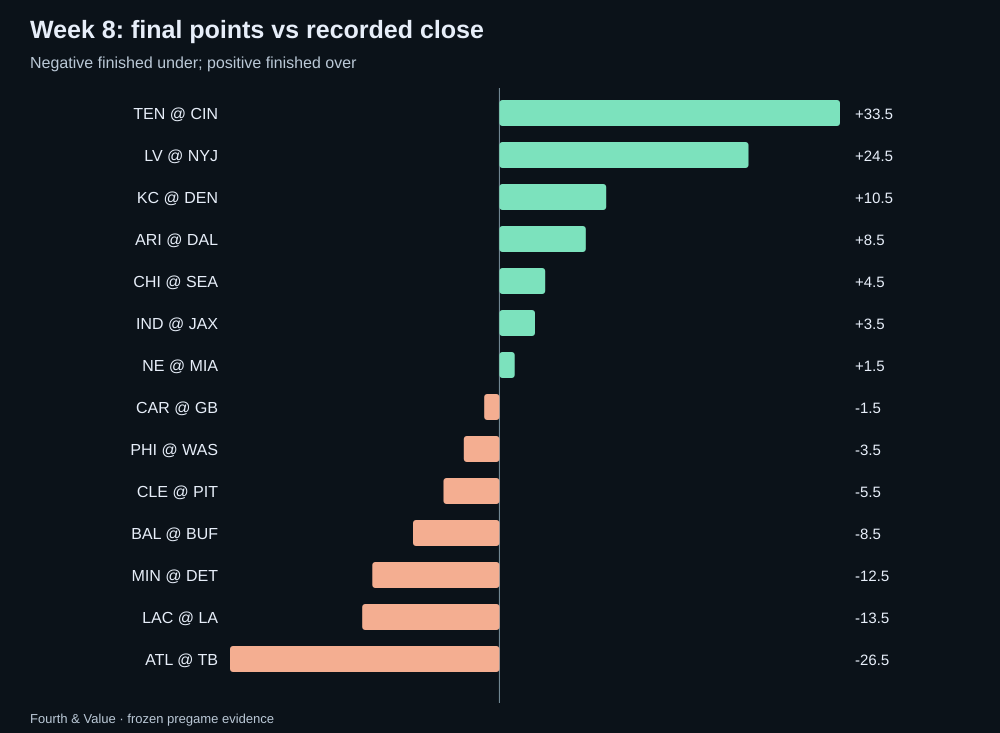
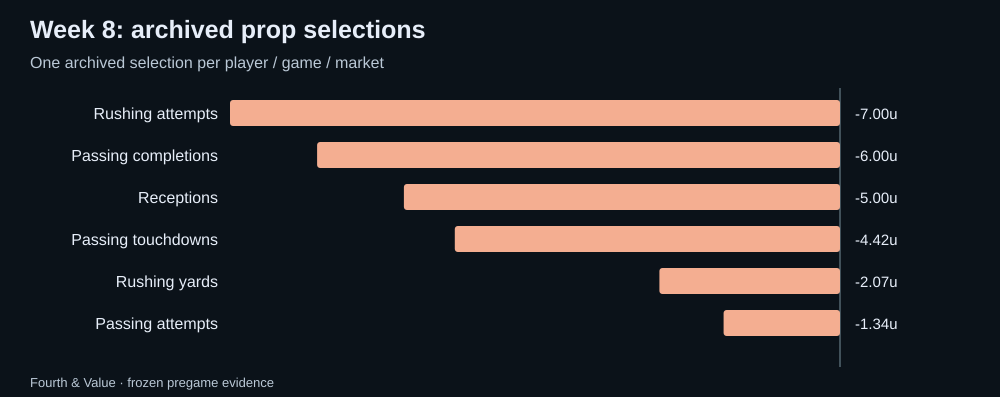
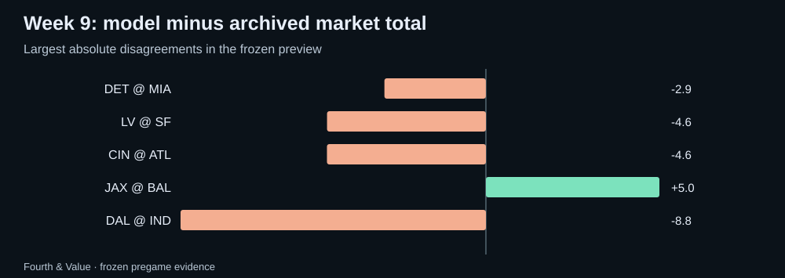

Fourth & Value · Weekly market review
NFL Week 8 review: the model receipts and the Week 9 watchlist
An audited Week 8 scorecard using frozen pregame data, plus Fourth & Value model-market disagreements to research for Week 9.
Week 8: the market scoreboard
Recorded closes produced 7 overs, 7 unders and 0 pushes. Against our archived market median, 6 games finished over, 8 under and 0 pushed.
The raw totals model direction went 5–9 with 0 pushes and -4.31u across 14 games with archived same-line prices; 0 unpriced directions are excluded from profit/loss. Mean absolute error was 12.25 points for the model versus 11.25 for the archived market median and 11.29 for the recorded close.

The model scorecard
The deduplicated published shortlist contained 81 selections; 80 were conservatively graded and 1 remain unresolved. The graded set went 25–55 with 0 pushes for -25.83u, or -32.3% on units risked. Missing participation or missing statistics remain unresolved rather than becoming automatic unders.
| Market | W–L | Net units | Unresolved |
|---|---|---|---|
| Passing attempts | 4–5 | -1.34u | 0 |
| Rushing yards | 2–4 | -2.07u | 0 |
| Passing touchdowns | 5–12 | -4.42u | 0 |
| Receptions | 14–21 | -5.00u | 1 |
| Passing completions | 0–6 | -6.00u | 0 |
| Rushing attempts | 0–7 | -7.00u | 0 |

Closing-line value report card
Each published pick’s price compared with the closing market: the median no-vig chance across US books at the pick’s exact line, captured in the final minutes before the start. Value at the close is how much more the published price paid than that closing chance justified; beat the close is the share of picks where it was positive; market move is how far the closing chance moved toward our side (positive) or away from it (negative) after the pick. Over many picks, value at the close is the earliest reliable sign of a real edge, long before win–loss results settle down. It is a measure of price, not a guarantee.
| Edition | Picks | Closing prices | Value at the close | Beat the close | Market move |
|---|---|---|---|---|---|
| Morning picks | 3 | 3 | +4.6% | 100% | +1.6 pts |
| Afternoon picks | 0 | 0 | — | — | — |
| All picks this week | 3 | 3 | +4.6% | 100% | +1.6 pts |
| All picks since 2026-10-19 | 5 | 5 | +1.2% | 60% | -0.0 pts |
Probability quality, not just profit
Across 238 representative non-push outcomes with both probabilities available, the model Brier score was 0.2560 versus 0.2468 for the de-vigged consensus. The game-block 95% interval for model minus market Brier was +0.0027 to +0.0153.
A positive one-week return and a better probability score are different claims. This report keeps both because a profitable slate can still expose probability weaknesses, and vice versa.
Week 9: disagreement is a research question
The new weekly refresh is frozen before the first kickoff. The largest raw totals disagreements are:
- DAL @ IND: model 42.7 vs archived median 51.5 (-8.8). This is a research gap, not a calibrated edge.
- JAX @ BAL: model 45.0 vs archived median 40.0 (+5.0). This is a research gap, not a calibrated edge.
- CIN @ ATL: model 47.9 vs archived median 52.5 (-4.6). This is a research gap, not a calibrated edge.
- LV @ SF: model 47.9 vs archived median 52.5 (-4.6). This is a research gap, not a calibrated edge.
- DET @ MIA: model 47.6 vs archived median 50.5 (-2.9). This is a research gap, not a calibrated edge.

Player props to recheck
- Gardner Minshew Passing attempts under 34.5 at bovada (-110); saved model mean 25.33, model probability 98.0%, estimated EV +87.1%. Calibration fitted; not prospectively validated
- Baker Mayfield Passing yards under 211.5 at draftkings (-112); saved model mean 133.40, model probability 98.0%, estimated EV +85.5%. Calibration fitted; not prospectively validated
- Travis Hunter Receptions over 1.5 at fanduel (+182); saved model mean 1.70, model probability 54.1%, estimated EV +52.5%. Calibration fitted; not prospectively validated
- Justin Herbert Passing touchdowns under 0.5 at bovada (+190); saved model mean 0.75, model probability 50.0%, estimated EV +45.0%. Calibration fitted; not prospectively validated
- Josh Cuevas Receptions over 1.5 at betonlineag (+164); saved model mean 2.55, model probability 54.8%, estimated EV +44.6%. Calibration fitted; not prospectively validated
These are saved prices from the weekly archive. Recheck the current line, price, injury status and role before treating any one of them as actionable. Model status labels are shown rather than hidden.
Audit notes
The scorecard uses hash-verified immutable weekly pregame archives.
The completed-week scorecard uses only the frozen pregame archive for Week 8 and official results/player statistics available after the games. The preview uses a separate frozen Week 9 archive. The workflow refuses to create a new archive after a game has started, refuses to overwrite an existing archive whose hashes do not match, and refuses to publish a review while any official Week 8 game remains unplayed.
Download the public review data · Current NFL board · How updates work · All recaps · Previous weekly review · Back to Fourth & Value